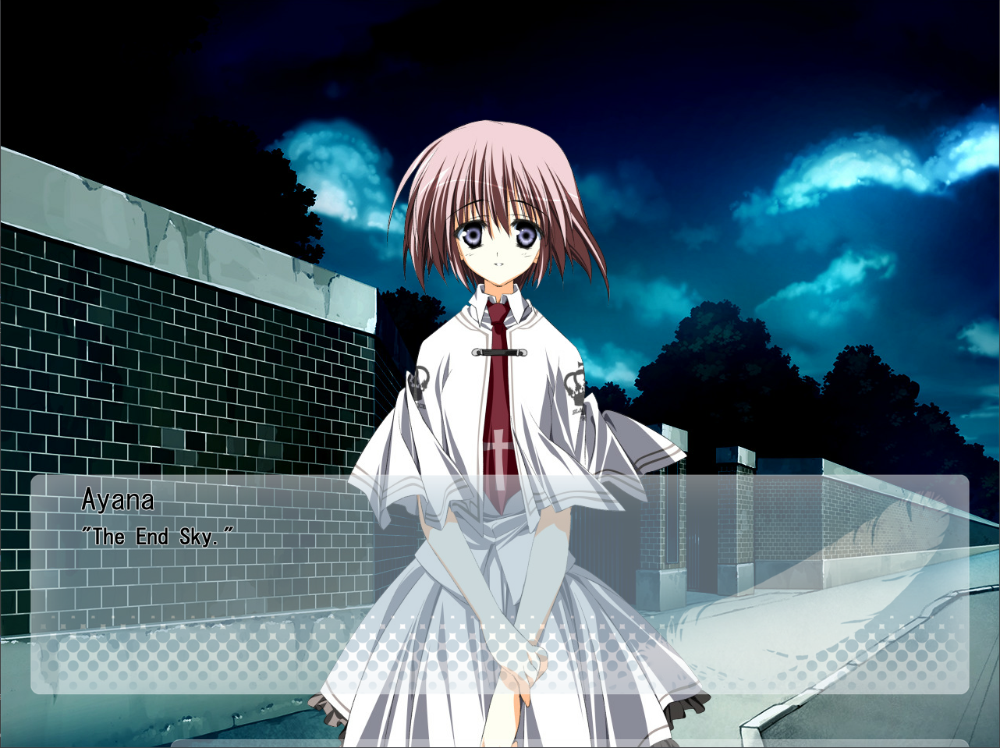

The key and the gate.
All-in-one and One-in-all of
limitless being and self.
The outer manifestation of the Primal Chaos.
The lurker at the threshold.
hasaki: You are...
Otonashi Ayana

ayana as a character is very cool to me... i really like the concept of "mysterious girl who says strange things that are actually very insightful and important". she's me (sort of idk), she's my wife, marriage with her is shared between me and two other friends, and she is just TOO COOL... originally kimika was my favorite subahibi character but not anymore, that was back in 2022 and i am much different now. ive said this 1 billion times but i WILL cosplay her... she is the greatest